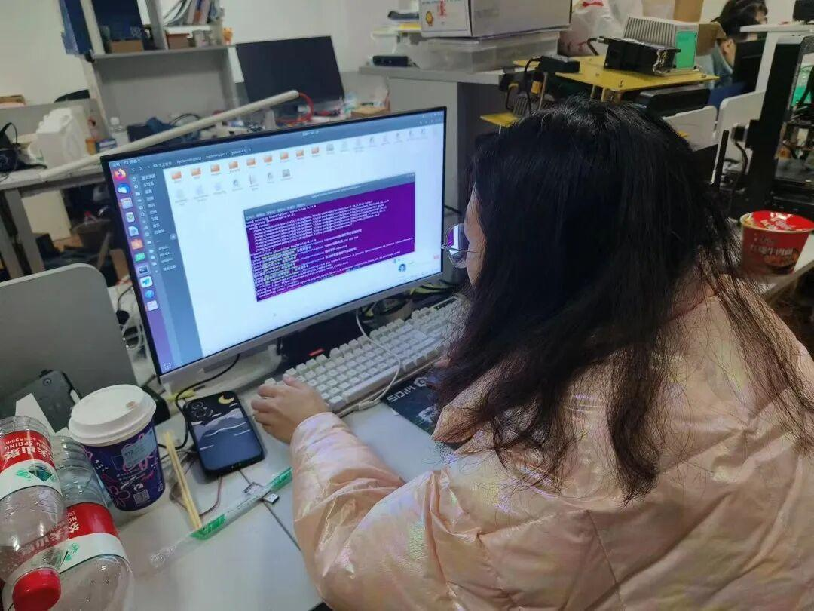
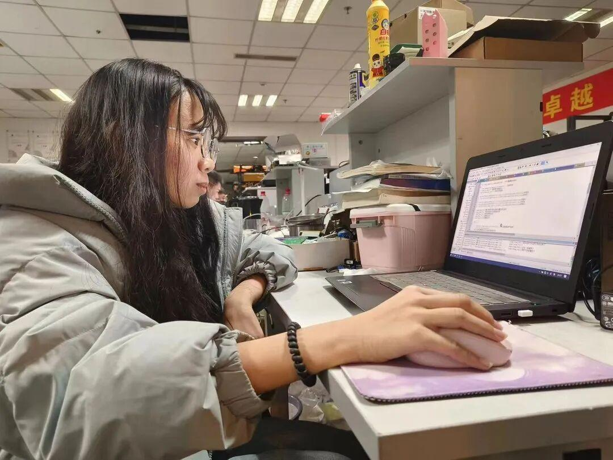
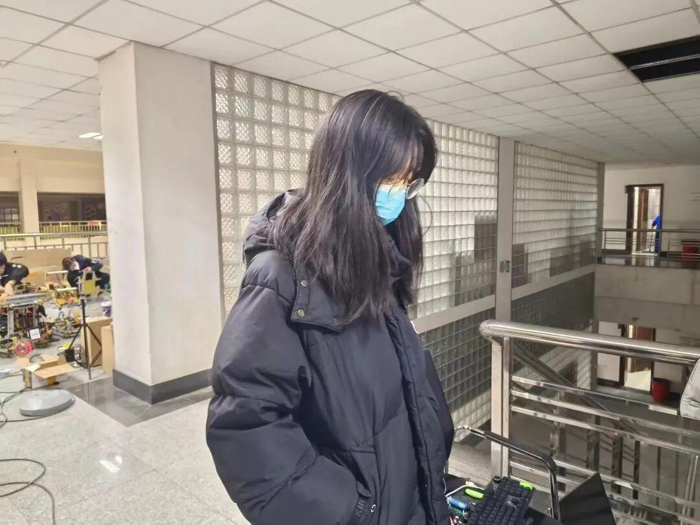
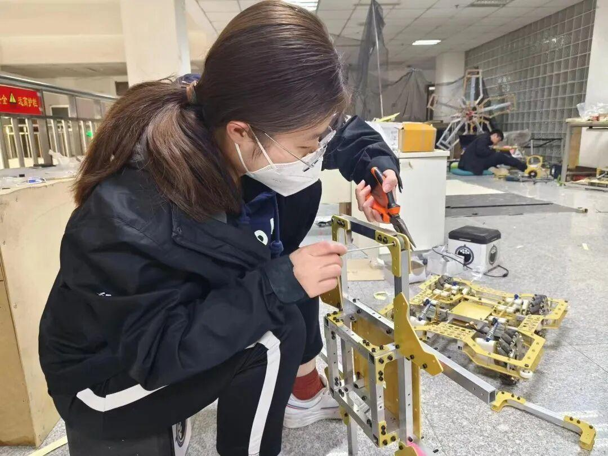
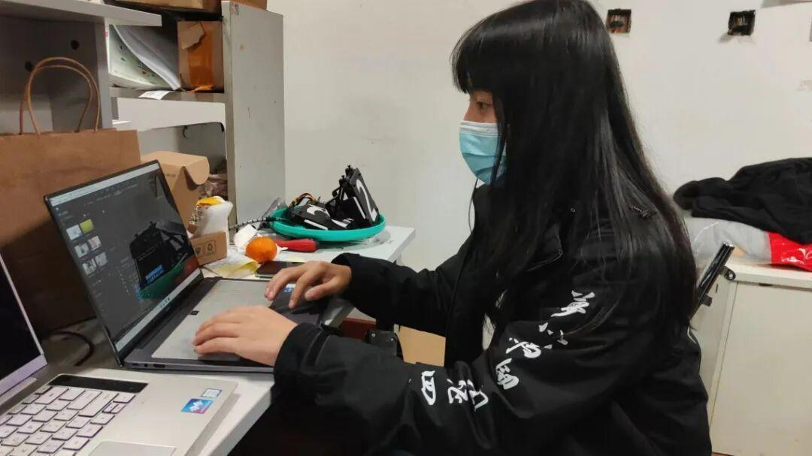
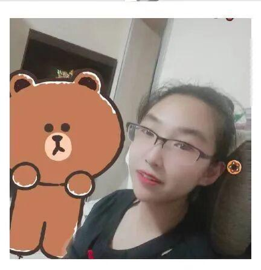

迟来的妇女节祝福
三月八日是我们为了庆祝女性在经济政治和社会领域做出重要贡献取得重大成就的日子，让我们再次祝福我们的女性同胞妇女节快乐，永远开心，永远年青有朝气，永远是自己心中的女神！
#对战队学姐的专访#
“这种事情肯定少不了主人公嘛”





这两天一直在忙于中期考核，战队也是在辛苦熬夜的写代码，不光是最近的考核，为了rm比赛，一直都在努力备战，这其中自然也少不了我们战队各位女神的努力，就从各位学姐的视角让我们走进战队吧。
“虽然很难以置信，但在小编对照片进行质疑时孙慧学姐以视频通话的方式证明照片确实是学姐本人。”
小编：学姐节日快乐，先做个简单的自我介绍吧。
孙慧学姐：孙慧，性别女，硬件组组长，23赛季项管。
小编：那您在这次机器人设计方面主要负责那个机器人或者说机器人的那个部分呢？
孙慧学姐：作为硬件组是主要负责超级电容这方面的，作为项目管理负责这里面调节队员的情绪吧，女生心思比较细腻嘛，可以很及时的观测到队员的情绪，帮助队长完成管理上的一些问题，督促一下进度。
小编：也就是说我们还起到了非常重要的调节作用。
孙慧学姐：是的，还主要负责周边制作，还有一些宣传工作。
小编：看来您负责的方面非常之多啊。那最近还有什么比赛在等待着我们战队呢？
孙慧学姐：在四月初有一个辽宁站的联盟赛，然后五月份还有一个北京赛区的超级对抗赛，但是要看8号的中期考核了。
小编：看来大家最近这么忙碌也是为了我们的中期考核了，怎么样，对自己的机器人有信心么？
孙慧学姐：其他队伍也很强大，很有压力，但是我们也很有信心。
小编：请学姐对我们战队还有对自己和女性朋友做个祝福吧。
孙慧学姐：希望能在兼顾rm的情况下抽出时间考研和上岸，战队的一些工作确实对于女生的要求会更高，但是女孩子要加油，希望我们女孩子好好做自己，好好打比赛，我们是最棒的，也祝所有的女孩子节日快乐。
“小编觉得学姐好像十分甚至有九分的沉迷与工作，十分甚至九分的严谨与贴心啊”
小编：也是请于学姐先做个简单的自我介绍吧。
于学姐：我是大二电控组的于红槿。
小编：平常有什么个人爱好可以多说一说的。
于学姐：爱好卖呆。
小编：那学姐在这次机器人制作中主要参与了那部分的制作呢？
于学姐：我是负责机器人”飞镖“的控制部分。
小编：这个中期考核也是如约而至啊，这段日子里在战队工作上有什么困难与感想么？
于学姐：这些天，中期考核还有期末考试以及流感都赶到一起了，很多事情很忙也很累。但是大家都在，都在为了rm而赶工，都在为了一个梦想二奋斗，希望中期必过。
小编：最后对战队，节日的主人公进行一下自己的祝福吧。
于学姐：希望今年能满怀大家的憧憬与希望，完美的登上赛场，希望大家能互相理解，互相鼓励，团结团圆的在一起。还希望飞镖能打的又远又准，多拿到更多的分。也希望今年能更多的提升自己，调好飞镖，找到自己的兴趣，更好的发展，让自己的大学不再迷茫。女孩子们，女孩节快乐，祝大家事事顺心，好运连连，青春永驻！（男孩子也要永远开心啊）
3
”经过对本人询问确定是化身的照片“
小编：也先请学姐做个简单的自我介绍吧。
舒学姐：我是视觉组组员舒铭，江湖人称狗老师，主要负责视觉瞄这块的工作。
小编：来到战队对战队的日常感到如何？
舒学姐：今年应该是我到电协的第二年了，电协是一个很好的大家庭吧，就大家会一起工作，平时的时候也会一起快乐玩耍，在我的大学生活中，这里是必不可少的部分。
小编：电协最近工作对你来说是怎样的呢？
舒学姐：战队的工作很忙碌，有的时候也很崩溃。我经常说，好想一拳锤爆地球，但是，每当干不下去的时候，也会有队友来和我唠嗑，唠着唠着又会突然热血（毕竟画大饼是电协的传统技能之一）在这里我收获了很多，学习了很多，最重要的是，我学会了如何在一个团队里去找到自己的分工和定位，去进行团队工作。
小编：就再请您对我们战队还有我们的女性包括自己做一个简单的祝福吧。
舒学姐：对于战队，那肯定是希望队里越来越好，迈北进深。对于女生的祝福，“想做什么就去做吧，如果有人和你说这不符合游戏规则，那就用行动告诉他，什么是规则。”
“这波是写推文的给推文头子写推文了”
小编：请老大介绍一下自己吧。
徐红学姐：信息部徐红，在战队中主要负责运营，宣传，整活之类的。
小编：来到战队后有什么收获呢？
徐红学姐：我以前是个重度拖延症患者，来到战队之后拖延症好了很多。战队的节奏很紧迫，拖延一点就会拖战队整体的进度，所以战队会推着我不断往前走，不断前进。在战队的每天都辛苦并快乐着，最大的收获就是这些吧
小编：对自己还有对战队未来的期望呢？
徐红学姐：对自己的期望大概就是能一直不断进步，慢一点也没关系只要在前进就一切都好。希望战队越来越好，实现队员们的雄心壮志，Ambition必胜。
小编：最后再进行一下节日祝福吧。
徐红学姐：每个女生都是散落在人间的天使，我们会做出最猛的机器人，我们会自信的大胆的站在赛场上。

“跟化身交流过后确定是本人照片（bushi）”
小编：经典环节，介绍一下自己吧。
樊学姐：我叫樊盈盈，然后是步兵机械，目前负责的步兵底盘。
小编：来到战队后最大的收获是什么？
樊学姐：到战队学会了建模，加工工具的使用，最大的收获的话，大概就是遇到了很多很有意思的人，然后大家一起打打闹闹很快乐吧。
小编：感觉战队的大家怎么样呢？
樊学姐：可以说是非常友好的了，各位学长们也经常帮助。
小编：对自己和战队在接下来的比赛中和未来的期望如何？
樊学姐：对自己的期望就是积极工作积极干饭积极玩耍哈哈哈哈哈哈。对战队的话就是迈北冲深（大家应该都有这个梦想）。
小编：对自己和战队送上自己的祝福吧。
樊学姐：搭车顺利，调车顺利，没有bug没有问题。


“其实在之前采访耿姐的时候有一张耿姐‘不严苟笑’的图片来着，怕挨打，还是放这张吧“
小编：经典的自我介绍环节，介绍一下自己吧。
耿学姐：我是在ambition战队负者雷达站这个兵种的，就在昨天成功完成了robomaster雷达站中期考核的拍摄，本人表示非常开心。
小编：可以多说点个人爱好之类的。
耿学姐：rmer不配有爱好。
小编：最近战队发生过什么让你难忘的事情或者小插曲么？
耿学姐：就在昨天我见识到了新的显卡的威力，神经网络模型训练的巨快无比，在离中期考核结束还有3个小时的时候，我们成功拍完了雷达站的视频，那一刻我直呼自己是一个天才，非常的开心。
小编：那对我们战队接下来得到比赛有什么期望呢？
耿学姐：接下来希望能成功通过中期考核，通过完整形态考核，成功去到北京，去到深圳，见识一下rm的赛场！
小编：最后再祝福一下我们战队还有自己吧。
耿学姐：最后我想说一下久违的口号，迈北进深，队长女装。欧耶！
这次迟来的祝福也是因为战队正好在3.8日这个特殊的日子迎来了中期考核，对于这次至关重要的的考核我们战队里每一个成员都在为止奋斗，我们的采访也是只能推迟，不过我相信这几天的辛苦奋斗所带给自己的最好成绩也是对自己最大的祝福，也是对我们每一个战队成员的最好祝福，迟来的祝福，祝我们的女神们节日快乐，对我们辛苦工作的学姐们来说，你们就是我们的女神，向着rm与战队一起前行吧！
图片|沈理电协
排版|勒寒
文字|勒寒
审核|红鲤